CRCE · CENTRO REGIONAL DE COORDINACIÓN DE EMERGENCIASPOO V · BACKEND
Elegí qué presentar
Cada grupo explica el código de sus archivos, en el orden en que se construyó.
Fundamentos
0Conformación del diagramaDel enunciado a cada clase, y de las clases a sus relaciones, hasta el diagrama completo.
1La base: listas cerradas y validacionesLo primero que se escribió: de acá depende todo lo demás.
2Los errores y el historialUn error con nombre por cada regla, y el Registro que deja constancia de todo.
Avisos y recursos
3El avisoDonde empieza el negocio: Nota, Descarte, estados y Aviso.
4Personal, equipo y vehículosLos recursos simples con los que se arman las unidades.
5La distribución y la unidadCómo se reparten las personas y cómo una unidad se compromete con una misión.
Coordinación
6La misiónEstados, unidad asignada, operaciones y los tres tipos de misión.
7La emergencia y la flotaLo último que se armó: coordina las misiones y controla los recursos de todas las unidades.
Sistema completo
9PlataformaRequisitos de la entrega final, Keycloak, Docker, configuración, API y pruebas.
10La interfaz en usoEl recorrido de PV19 con capturas reales, participante por participante.
01 · el problema que resuelve
Un centro que recibe avisos y decide quién responde
El CRCE recibe avisos de inundaciones, incendios y accidentes viales. Sus operadores los evalúan,
registran las emergencias y organizan misiones (evacuación, rescate o asistencia sanitaria) con las
unidades de sus bases operativas.
Aviso
→
Emergencia
→
Misión
→
Unidad
El backend es el núcleo de reglas: decide qué operaciones están permitidas, con qué recursos,
y deja constancia de cada una. No es una API ni un servidor: es un dominio en Python puro, sin librerías externas.
01 · el problema que resuelve
Qué reglas hace cumplir el backend
Un aviso se evalúa una sola vez
Nace pendiente. Aceptarlo origina una emergencia; descartarlo exige justificación. Después no admite más cambios.
AvisoState
Una unidad atiende solo lo que puede
Debe estar habilitada, libre y tener el vehículo, el personal y el equipo que pide ese tipo de misión.
UnidadMision
Nada está en dos lugares a la vez
Una persona, un vehículo o un equipo pertenece a una sola unidad. Lo controla la Flota, porque una unidad sola no conoce a las demás.
Flota
Una emergencia se cierra con criterio
Sin misiones sin concluir y con al menos una misión exitosa.
Emergencia
Todo deja constancia
Cada operación relevante genera un Registro inmutable: quién, cuándo, qué y sobre qué.
Registro
Si falla, nada cambia
Se valida y se arma todo antes de modificar: un rechazo no deja objetos a medio cambiar.
Fallar antes de modificar
02 · cómo está organizado
Un dominio, sus pruebas y la documentación
El repositorio
ProyectoFinal-PP5/
├─ pyproject.toml Python ≥ 3.13 · sin dependencias
├─ dominio/ 13 módulos: el backend
├─ tests/ 8 archivos · 204 pruebas
└─ docs/ presentación y diagramas,
generados del código real
Qué hay y qué no hay
Solo biblioteca estándar: lo verifica test_diseno.py.
pytest es la única dependencia, y solo para desarrollo.
Cada módulo concentra una parte del problema; colaboran importándose entre sí.
No hay servidor, base de datos ni interfaz en esta entrega: el alcance es el dominio y sus reglas. La persistencia y la API se construyen encima.
Las fechas entran como parámetro: el dominio nunca consulta el reloj, así las pruebas dan siempre el mismo resultado.
02 · cómo está organizado
Cada módulo solo conoce a los de su nivel o a los de abajo
Coordinaciónprocesos completos y consistencia
avisoemergenciaflota
Unidad y misiónse verifican entre sí
unidadmision
Recursoslo que tiene una unidad
personalequipamientovehiculosdistribucion
Baselistas cerradas, errores, validaciones y registro
catalogoserroresvaloreshistorial
Unidad y Misión se necesitan: Misión importa a Unidad, y Unidad solo nombra a Misión para anotar tipos
(TYPE_CHECKING). En ejecución no hay ciclos de importación.
03 · clases y componentes principales
Seis piezas llevan el negocio
Aviso
entidad · State
Registra lo que informa un reportante y se evalúa una sola vez.
EmergenciaRegistro.de(…, Operacion.MISION_ASIGNADA, …)arma el registro, sin guardarlo
Misionasignar(unidad)la emergencia delega
Mision_estado.asignar()¿está pendiente?
Unidadcomprometer(mision)verifica todo, en orden
Unidad_condicion.verificar_habilitada() · _mision_id is None¿habilitada y libre?
Vehiculoverificar_operativo()¿el vehículo sirve?
Misionverificar_vehiculo(v) → v.verificar_rescate()doble despacho: el vehículo responde
Misionverificar_personal(p) → existe_distribucion(puestos, p)personas distintas por puesto
Misionverificar_equipamiento(unidad)el equipo operativo que pide
Unidad_mision_id = mision.idrecién ahora se reserva
Mision_asignacion y _estado cambianrecién ahora cambia la misión
Emergencia_registros.append(registro)y queda el registro
Si cualquier verificación lanza un error, la cadena se corta y nadie había cambiado nada:
primero se pregunta, y solo al final se modifica.
04 · cómo se comunican
Cuatro reglas de la comunicación
Se pide, no se pregunta
La misión no consulta de qué tipo es el vehículo: le dice «verificá» y el vehículo responde. Por eso el dominio no usa isinstance ni type.
PolimorfismoDoble despacho
Cada objeto cuida lo suyo
Los datos salen como ids, tuplas o vistas de solo lectura. La emergencia entrega sus misiones como VistaMision: una foto que no se puede modificar, así nadie se saltea a la emergencia (por ejemplo, cancelando la misión desde afuera).
Encapsulamiento
La regla vive donde están los datos
La unicidad entre unidades la cuida la Flota; el cierre lo cuida la Emergencia; qué pide cada misión, la Mision.
Raíz de agregadoResponsabilidad
Todo hecho deja un Registro
Aviso, Emergencia y Unidad arman un Registro por cada operación: quién, cuándo, qué y sobre qué recursos.
1 · Entra: parámetros simples: ids (str), catálogos (Enum) y la fecha (datetime) que llega de afuera
2 · Decide: el estado (State) dice si la operación es posible
3 · Valida y construye: los valores y objetos nuevos se arman y se validan sin tocar nada
4 · Confirma: recién ahora se modifican los atributos y se agrega el registro
5 · Devuelve: se entrega el resultado; lo demás se lee con propiedades de solo lectura, tuplas o vistas
05 · cómo se procesan los datos
Ejemplo real: aceptar un aviso, etapa por etapa
Un vecino reportó una inundación de gravedad media, pero el operador comprueba que es un
incendio grave. Así lo procesa Aviso.aceptar(), con las mismas cinco etapas del camino de un dato.
1
Entra: el operador op-1 acepta el aviso av-1 y corrige su clasificación.
además: reasignar (sigue asignada) · rechazar (vuelve a pendiente) · cancelar (desde pendiente o asignada)
Unidadquien la administra
habilitada·en mantenimiento·fuera de servicio
se cambia con declarar_en_mantenimiento(), declarar_fuera_de_servicio() y restablecer_servicio(); estar comprometida con una misión es otro dato
En el aviso, la emergencia y la misión, cada flecha es una operación que primero consulta al estado actual: lo que no figura se rechaza.
06 · conceptos de POO y para qué
Los conceptos que organizan el modelo
Encapsulamientoatributos privados (_estado, _misiones), propiedades de solo lectura, tuplasNadie cambia un objeto desde afuera: solo él decide cómo y cuándo cambia.
AbstracciónMision, Vehiculo y los estados (ABC con @abstractmethod)Fijan qué se puede pedir sin decir cómo. No existen «misiones genéricas».
Herenciatres tipos de misión, tres categorías de vehículo, la familia de erroresReutilizar lo común y especializar lo propio.
Polimorfismomision.verificar_vehiculo(v), estado.aceptar()Mismo mensaje, respuesta según la clase: se evita preguntar por el tipo (sin isinstance).
ComposiciónUnidad (jefe, personal, vehículo, equipo), Flota, EmergenciaLos objetos grandes se arman con objetos chicos y les delegan.
Delegación y doble despachoMision → vehiculo.verificar_*(), unidad.comprometer(mision)La misión sabe qué pide y el vehículo qué puede: cada uno resuelve lo suyo.
Raíz de agregadoEmergencia (misiones), Flota (unidades)Un solo punto de entrada que garantiza la consistencia de lo que contiene.
06 · conceptos de POO y para qué
Patrones y decisiones de diseño
Stateestados de Aviso, Mision y Emergencia; _Condicion de UnidadCada estado decide qué operaciones admite: no hay un if por estado en cada método, y agregar un estado es agregar una clase.
Null Object_SinUnidad / _ConUnidad en la misiónEvita None y comprobaciones: una misión sin unidad responde igual que una con unidad.
Objetos valor inmutablesUbicacion, Nota, Persona, Registro (frozen=True)Valores que no se alteran una vez validados; el historial no se reescribe.
Fallar antes de modificardescartar, aceptar, comprometer, incorporar_unidadSi algo falla, el objeto queda como estaba: se valida y arma todo antes del primer cambio.
Excepciones propiasErrorDeDominio y 26 derivados; UnidadOcupada con herencia múltipleEl motivo del rechazo viaja en el tipo del error.
Catálogos cerrados9 clases Enum sobre CatalogoUn valor fuera de la lista no se puede construir.
Dominio puro y verificablefechas por parámetro, solo biblioteca estándar, test_diseno.pyPruebas repetibles, sin reloj ni librerías, y el diseño se vigila con tests.
07 · cómo se verifica
204 pruebas comprueban comportamiento y diseño
Qué prueba cada archivo
test_avisos.pyReglas R1 a R6 del aviso: cada prueba nombra la regla18
test_avisos_robustez.pyDatos que nacen juntos y estado coherente15
test_evaluacion_avisos.pyAceptar origina una única emergencia; descartar19
test_recursos.pyPersonal, vehículos, equipos, unidades y flota31
test_asignacion.pyLas condiciones de la unidad al asignar, en orden26
test_ejecucion.pyRechazar, iniciar, novedades, finalizar, reasignar y cancelar29
test_emergencias.pyPrioridad, misiones, cierre e historial37
test_diseno.pyReglas de diseño sobre el código: sin isinstance ni type, solo biblioteca estándar, sin datetime.now29
✔
Pruebas exitosas
204 de 204 pasaron.
01 · dominio/catalogos.py
Las listas cerradas del enunciado
Todas las opciones permitidas (tipos de situación, gravedad, competencias, categorías, condiciones, tipos y resultados de misión) se definen una sola vez como Enum.
A continuación se detalla1Catalogo2Las listas del enunciado
Qué contiene
Catalogobase común: pregunta si un valor pertenece a la lista
TipoSituacion · Gravedadqué pasó y qué tan grave es
Competenciaqué sabe hacer una persona
CategoriaVehiculo · CategoriaEquipoqué es cada recurso
CondicionOperativa · CondicionServiciosi un recurso o una unidad sirve
TipoMision · ResultadoMisionqué misión es y cómo terminó
Se comunica con
Usa—
Lo usanavisodistribucionemergenciaequipamientomisionpersonalunidadvehiculos
Conceptos POO
EnumHerenciaMétodo de clase
Un valor fuera de la lista no se puede construir: nunca llega al resto del sistema.
01 · dominio/catalogos.py · líneas 7–17
Catalogo
7from enum import Enum
8
9
10class Catalogo(Enum):
11"""Base de los catálogos: pregunta pertenencia sin comparar clases."""
12
13@classmethod
14def contiene(cls, valor) -> bool:
15 # `valor in cls` aceptaría también el texto "inundacion" como válido;
16 # por eso se compara contra los miembros reales.
17return valor in tuple(cls)
01 · dominio/catalogos.py · líneas 20–85
Las listas del enunciado
20class TipoSituacion(Catalogo):
21 INUNDACION = "inundacion"
22 INCENDIO = "incendio"
23 ACCIDENTE_VIAL = "accidente_vial"
24
25
26class Gravedad(Catalogo):
27"""El orden (ALTA > MEDIA > BAJA) se usa después para priorizar emergencias (§4)."""
52"""Categorías de equipamiento especializado (§5.5)."""
53
54 EQUIPO_DE_RESCATE = "equipo_de_rescate"
55 EQUIPO_SANITARIO = "equipo_sanitario"
56
57
58class CondicionOperativa(Catalogo):
59"""Condición de un vehículo o de un elemento de equipamiento (§5.4, §5.5)."""
60
61 OPERATIVO = "operativo"
62 FUERA_DE_SERVICIO = "fuera_de_servicio"
63
64
65class CondicionServicio(Catalogo):
66"""Condición de servicio de una unidad (§8.4). No es lo mismo que estar comprometida."""
67
68 HABILITADA = "habilitada"
69 EN_MANTENIMIENTO = "en_mantenimiento"
70 FUERA_DE_SERVICIO = "fuera_de_servicio"
71
72
73class TipoMision(Catalogo):
74"""Nombre público del tipo de misión (§6). El comportamiento vive en cada clase de misión."""
75
76 EVACUACION = "evacuacion"
77 RESCATE = "rescate"
78 ASISTENCIA_SANITARIA = "asistencia_sanitaria"
79
80
81class ResultadoMision(Catalogo):
82"""Resultado que declara el jefe al finalizar (§2.3, §8.1)."""
83
84 SATISFACTORIO = "satisfactorio"
85 NO_SATISFACTORIO = "no_satisfactorio"
01 · dominio/valores.py
Dos validaciones compartidas y la clase Ubicacion
Reúne lo pequeño que reutilizan 9 de los 13 módulos: dos funciones que responden sí o no sobre un dato («¿hay texto?» y «¿es un entero mayor que cero?») y el valor Ubicacion. Una clase que recibe un dato obligatorio no escribe su propia comprobación: le pregunta a estas funciones.
A continuación se detalla1Validaciones compartidas2Ubicacion
Qué contiene
hay_texto()¿hay texto con contenido? Rechaza vacío y solo espacios. Ej.: el reportante de un aviso
es_entero_positivo()¿es un entero mayor que cero? Ej.: la capacidad de evacuados de un transporte
Ubicaciondirección y localidad, inmutable y validada. Vive acá y no en aviso.py para que Aviso y Emergencia la usen sin importarse entre sí
Se comunica con
Usaerrores
Lo usanavisoemergenciaequipamientoflotahistorialmisionpersonalunidadvehiculos
Conceptos POO
Objeto valorInmutabilidadValidación
Cada regla de validación se escribe una sola vez: si cambia, se cambia en un solo lugar.
01 · dominio/valores.py · líneas 7–25
Validaciones compartidas
7from __future__ import annotations
8
9import operator
10from dataclasses import dataclass
11
12from dominio.errores import DatoDeAvisoInvalido
13
14
15def hay_texto(valor) -> bool:
16"""Verdadero si hay texto con contenido (rechaza None, "" y solo espacios)."""
17return bool(valor) andnot valor.isspace()
18
19
20def es_entero_positivo(valor) -> bool:
21"""Verdadero para 1, 2, 3... Rechaza 0, negativos, decimales, texto, None y True."""
22try:
23return operator.index(valor) > 0and valor isnotTrue
20"""Verdadero si cada puesto puede ocuparlo una persona distinta con esa competencia."""
21ifnot puestos:
22returnTrue
23 primero, resto = puestos[0], puestos[1:]
24for indice, persona in enumerate(personas):
25if persona.tiene(primero) and existe_distribucion(resto, personas[:indice] + personas[indice + 1:]):
26returnTrue
27returnFalse
05 · dominio/unidad.py
La unidad se compromete solo si cumple todo
Una unidad agrupa jefe, personal, vehículo y equipamiento. Antes de reservarse para una misión verifica, en orden, todas las condiciones.
A continuación se detalla1La condición de servicio2Unidad.__init__3Lectura y consultas4Comprometer, liberar y exigir_jefe5Administrar el personal, el vehículo y el equipo6Condición de servicio e internos
Qué contiene
Unidaddotación, vehículo, equipo, misión comprometida e historial
_Condicion y sus tres variantesHabilitada, En mantenimiento y Fuera de servicio (State)
302f"La unidad {self._id} está comprometida con la misión {self._mision_id}: no se modifica")
06 · dominio/mision.py
Una misión, tres especializaciones
Mision es abstracta: no existe «una misión genérica». Evacuación, rescate y asistencia sanitaria declaran qué piden y la base hace lo común.
A continuación se detalla1Novedad, Resultado y VistaMision2Los cinco estados3La unidad asignada (Null Object)4Mision, la clase abstracta5Asignar, reasignar y cancelar6Lo que hace el jefe de la unidad7Lo que la emergencia le pregunta8Evacuación, Rescate y Asistencia sanitaria
Qué contiene
Misionoperaciones del operador y del jefe; clase abstracta
Evacuacion · Rescate · AsistenciaSanitarialos tres tipos y sus requisitos
_Estado y cinco variantesPendiente, Asignada, En ejecución, Finalizada y Cancelada
_SinUnidad · _ConUnidadNull Object de la unidad asignada
Conoce todas las bases y unidades. Controla lo que una unidad sola no puede garantizar: que una persona, un vehículo o un equipo no estén en dos unidades.
A continuación se detalla1BaseOperativa y Flota2Registrar bases e incorporar unidades3Cambios que miran a las demás unidades4Unicidad entre unidades
Qué contiene
Flotabases, unidades y control de unicidad
BaseOperativaid, nombre y ubicación (valor inmutable)
125if u.id != salvo_unidad_id and u.tiene_equipo(equipo_id):
126raise RecursoDuplicado(f"El equipo {equipo_id} ya está en la unidad {u.id}")
conformación del diagrama
Del enunciado al diagrama de clases
Antes del código, el modelo: se lee el enunciado, se arma cada clase con lo que sabe y lo que hace, y recién después se definen las relaciones entre ellas.
1Leer el enunciadomarcar quién informa, qué se registra y qué reglas se repiten
2Armar cada claselo que sabe (atributos) y lo que hace (operaciones)
3Relacionarlasquién contiene a quién, con qué multiplicidad
4El diagrama completolo mismo que está en el código
conformación del diagrama · clase 1 de 9
Aviso: lo que informa el reportante
Lo que dice el enunciado
Al registrar un aviso se indica ubicación, tipo de situación, gravedad estimada y una descripción. §2.1
Los registros no pueden modificarse ni eliminarse. §9
→ valor inmutable
Aviso, Emergencia y Unidad guardan su propio historial de registros.
«valor inmutable»Registro
+actor_id: str
+fecha_hora: datetime
+operacion: Operacion
+recursos: tuple[str, ...]
+detalle: tuple[tuple[str, str], ...]
+de(cls, actor_id, fecha_hora, …) : Registro
+dato(clave) : str | None
conformación del diagrama · relaciones, paso 1 de 4
El aviso origina la emergencia, y la emergencia reúne sus misiones
Aviso → Emergenciaun aviso aceptado origina una única emergencia; uno pendiente o descartado, ninguna (1 a 0..1)§7.1
Emergencia ◆ Misionuna emergencia contiene cero o más misiones; cada misión pertenece a una sola§6, §7.2
Emergencia ◆ Registrocada emergencia guarda su historial: al menos el registro de su creación§9
conformación del diagrama · relaciones, paso 2 de 4
La misión: su unidad, sus tipos y lo que informa el jefe
Mision → Unidaduna misión tiene como máximo una unidad asignada (0..1)§6
Mision ◆ Novedad / Resultadoregistra cero o más novedades y, al finalizar, un resultado (0..1 mientras no termine)§2.3
Mision △ Evacuacion, Rescate, AsistenciaSanitarialos tres tipos heredan de Mision§6
conformación del diagrama · relaciones, paso 3 de 4
La unidad y sus recursos
Unidad ◆ Personasu dotación: una o más personas, jefe incluido (1..*)§5.2
Unidad ◆ Vehiculo / Equipoun vehículo y cero o más equipos§5.2
Vehiculo △ tres categoríastransporte, rescate y ambulancia heredan de Vehiculo§5.4
Mision ⇢ Vehiculola misión le pregunta al vehículo si sirve (doble despacho)§6.4
conformación del diagrama · relaciones, paso 4 de 4
La flota agrupa todas las unidades
Flota ◆ Unidadla flota reúne cero o más unidades y controla que ningún recurso esté en dos§5.1, §5.2
conformación del diagrama · resultado
El diagrama de clases completo
Rueda para acercar · arrastrá para moverte
Lo que quedó
17 clases, leídas del código
17 relaciones: 11 entre clases y 6 de herencia
2 jerarquías: Mision y Vehiculo
Para ver el código de cada clase, los estados de la misión o la lista, abrí Diagramas desde el menú ☰ (tecla D).
sistema completo · plataforma
Del modelo al sistema que funciona
El dominio decide las reglas; alrededor hacen falta piezas que lo vuelvan usable: quién es el usuario, dónde se guardan los datos, cómo se arranca todo y cómo se opera desde una pantalla.
Navegadorinterfaz en /app
① usuario y clave → token② pedido con Bearer token
docker compose · 3 contenedores
Keycloakrealm crce · :8080usuarios, claves y los cinco perfiles; emite el token
API FastAPI:8000
routerserviciodominiorepositorio
③ verifica la firma con las claves públicas de Keycloak
MongoDB:27017 · volumen mongo-dataavisos, emergencias con sus misiones, bases y unidades
Las tres piezas del recuadro punteado corren en contenedores. Con docker compose up -d --build queda todo en marcha, con los usuarios y las unidades de demostración ya cargados.
sistema completo · entrega final
Lo que pide la entrega final y cómo se cumple
Los diez requisitos de la sección 12 del enunciado, con la decisión tomada y el lugar del repositorio donde se puede verificar.
Requisito
Cómo se cumple
Dónde
Aplicación en Python
Python 3.13; dependencias fijadas con uv (uv.lock).
pyproject.toml
✓
Modelo de dominio con POO
Clases puras, sin FastAPI ni Mongo: estados, polimorfismo, doble despacho, objetos nulos, valores inmutables y errores propios.
dominio/
✓
API HTTP en capas
36 rutas; cada recurso con router → servicio → repositorio. El router traduce HTTP, el servicio coordina y el dominio decide.
app/avisos, app/emergencias, app/recursos
✓
Persistencia
MongoDB con documentos versionados: si cambia el formato, se migra al leer.
*/mongo_repository.py, */esquema_mongo.py
✓
Autenticación y autorización
Keycloak emite el token; la API lo verifica y aplica dos niveles: perfil por ruta y relación con el recurso.
app/auth/, keycloak/crce-realm.json
✓
Interfaz gráfica
HTML, CSS y JavaScript sin framework, servidos por la misma API en /app; una vista por perfil.
interfaz/
✓
Pruebas unitarias
351 pruebas: dominio, autorización y API; las de API corren en memoria y contra Mongo simulado.
tests/
✓
Dockerfile y Compose
Una orden levanta API, MongoDB y Keycloak, con la carga inicial incluida.
Dockerfile, docker-compose.yaml
✓
Colección Bruno
41 pedidos con 49 verificaciones: casos válidos y rechazos 401, 403, 409 y 422.
bruno/
✓
Repositorio público
Código, instrucciones de ejecución y esta documentación publicada en GitHub Pages.
README.md, docs/
✓
sistema completo · escenarios de validación
Los 19 escenarios y dónde se demuestra cada uno
Cada escenario tiene pruebas automáticas que lo reproducen. Los rechazos se muestran también con Bruno, y el recorrido completo, con la interfaz (el enunciado admite demostrar los casos negativos con Bruno).
PVEscenarioPruebasTambién en
PV01Registro y consulta de avisostest_evaluacion_avisos, test_autorizacionBruno · interfaz
PV02Evaluación de avisostest_evaluacion_avisosBruno · interfaz
PV03Priorización por gravedadtest_emergenciasBruno · interfaz
PV04Varias misiones por emergenciatest_emergencias, test_api_misionesinterfaz
PV05Situación y tipo de misióntest_emergencias, test_api_misionesinterfaz
PV06Capacidad de transportetest_asignacion, test_recursos
PV07Competencias e integrantestest_asignacion, test_recursos
PV08Compatibilidad de vehículostest_asignacionBruno · interfaz
PV09Equipamiento no operativotest_asignacion, test_recursos
PV10Exclusividad de asignacióntest_asignacioninterfaz
PVEscenarioPruebasTambién en
PV11Ejecución de una misióntest_ejecucionBruno · interfaz
PV12Restricciones de responsabilidadtest_autorizacion, test_ejecucionBruno (403)
PV13Rechazo y reasignacióntest_ejecucionBruno · interfaz
PV14Administración de recursostest_recursosinterfaz
PV15Cancelacióntest_ejecucioninterfaz
PV16Cierre de emergenciatest_emergenciasBruno · interfaz
PV17Historial de operacionestest_emergenciasBruno · interfaz
PV18Consistencia ante errorestest_emergencias, test_api_misionesBruno (409)
Los archivos de pruebas están en tests/ y cada prueba nombra el escenario que reproduce.
sistema completo · autenticación
Keycloak: quién es el usuario
Keycloak es un servidor de identidad: guarda usuarios, contraseñas y roles, y emite tokens firmados. La API no maneja contraseñas: solo confía en lo que Keycloak firmó.
Del inicio de sesión a la operación
1El usuario escribe usuario y clave en la interfaz; Keycloak los valida y devuelve un token firmado (JWT).
2Cada pedido a la API lleva el token en el encabezado Authorization: Bearer ….
3VerificadorKeycloak comprueba la firma con las claves públicas del realm (JWKS) y que el emisor sea crce.
4Usuario.desde_token toma preferred_username y el único rol de los cinco perfiles.
5La ruta exige su perfil con requiere(...); el servicio o el dominio exigen la relación con el recurso.
Extracto real. El rol jefe_unidad se convierte en Perfil.JEFE_UNIDAD; el usuario ana coincide con su id de persona, y así el dominio sabe de qué unidad es jefa.
Problema que evita: si la API guardara claves propias, habría dos fuentes de verdad sobre quién es quién. Con el token firmado, nadie puede cambiarse el perfil sin invalidar la firma.
sistema completo · autorización
Dos niveles de autorización (PV01 y PV12)
Nivel 1 · perfil por ruta
Cada endpoint declara qué perfiles lo usan. Se resuelve antes de llegar al servicio: si no corresponde, el caso de uso ni se ejecuta.
Operador = Annotated[Usuario, Depends(requiere(Perfil.OPERADOR))]
Jefe = Annotated[Usuario, Depends(requiere(Perfil.JEFE_UNIDAD))]
def finalizar(self, emergencia_id, mision_id, datos, servicio, usuario: Jefe):
... # el dominio verifica además que sea el jefe de ESA unidad
Nivel 2 · relación con el recurso
Lo decide quien conoce el recurso: Usuario.exigir_acceso_a() para el reportante y Unidad.exigir_jefe() en el dominio para el jefe. Ambos terminan en 403.
Qué responde la API
Código
Cuándo
Ejemplo
401
Falta el token, o está vencido o mal firmado.
pedido sin Authorization
403
El perfil no puede usar esa ruta (nivel 1).
ana intenta registrar un aviso: *Operación permitida solo para: reportante*
403
El perfil es correcto pero el recurso no es suyo (nivel 2).
un jefe inicia una misión de otra unidad; un reportante abre un aviso ajeno
503
Keycloak no responde y no se puede validar la firma.
el contenedor de Keycloak está detenido
El 403 de nivel 2 no se puede resolver solo con el rol: los dos jefes tienen el mismo perfil. Por eso esa regla vive en el dominio, junto a la unidad.
sistema completo · autenticación
El realm crce: perfiles y usuarios de demostración
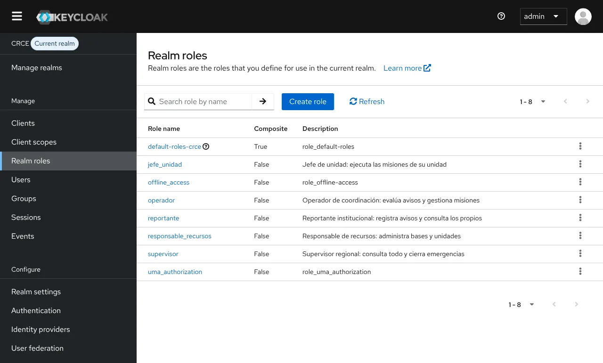
Los cinco roles del realm coinciden con los cinco perfiles del enunciado (§2).
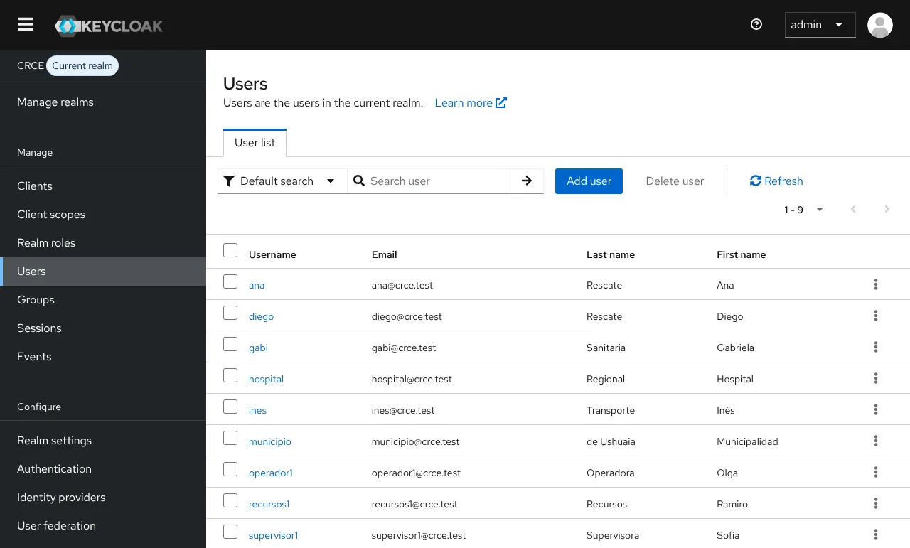
Nueve usuarios de demostración. Todos usan la clave crce2026.
Usuario
Rol
Para qué
hospital
reportante
registra avisos y consulta los propios
municipio
reportante
segundo reportante (PV01)
operador1
operador
evalúa avisos y gestiona misiones
ana · diego · gabi · ines
jefe_unidad
jefes de U-rescate-1, U-rescate-2, U-ambulancia-1, U-transporte-1
recursos1
responsable_recursos
administra bases y unidades
supervisor1
supervisor
consulta todo y cierra emergencias
El realm entero (roles, usuarios, cliente crce-api) está en keycloak/crce-realm.json y se importa al arrancar: no hay que configurar nada a mano.
sistema completo · docker
Docker: el mismo sistema en cualquier máquina
Docker empaqueta un programa con todo lo que necesita (Python, dependencias, configuración) en una imagen; un contenedor es esa imagen en ejecución. Docker Compose describe varios contenedores que trabajan juntos y los levanta con una sola orden.
api:8000
construida con el Dockerfile
La API y la interfaz (/app).
Al arrancar corre la carga inicial y después FastAPI.
Espera a que la base esté sana (depends_on con service_healthy).
db:27017
mongo:7.0
Guarda avisos, emergencias, bases y unidades.
Volumen mongo-data: los datos sobreviven a un reinicio.
healthcheck con mongosh ping cada 5 s.
keycloak:8080
quay.io/keycloak/keycloak:26.7.5
Usuarios, contraseñas y perfiles.
Importa el realm crce desde keycloak/crce-realm.json.
Consola de administración: admin / admin.
Problema que evita: «en mi máquina funciona». Sin Docker habría que instalar Python 3.13, MongoDB y Keycloak con las mismas versiones, crear usuarios y cargar datos a mano. Con Compose, el profesor ejecuta lo mismo que se probó.
sistema completo · docker
Cómo se construye la imagen y en qué orden arranca
Dockerfile en dos etapas
FROM python:3.13-slim AS build
COPY --from=ghcr.io/astral-sh/uv:0.8.22 /uv /uvx /bin/
COPY uv.lock pyproject.toml ./
RUN uv sync --frozen --no-dev
COPY . .
FROM python:3.13-slim AS runtime
RUN useradd -u 1001 ... appuser
COPY --from=build /app .
USER appuser
CMD ["sh", "-c", "python -m app.semilla && fastapi run main.py ..."]
build: instala las dependencias exactas del uv.lock.
runtime: copia solo el resultado; la imagen final no lleva herramientas de compilación.
Corre con un usuario sin privilegios (appuser), no como root.
Orden de arranque
1Arrancan db y keycloak; Keycloak importa el realm.
2Cuando db responde al healthcheck, Compose arranca api.
3python -m app.semilla carga bases y unidades; si ya existen, no las repite.
4fastapi run atiende en el puerto 8000: API y, en /app, la interfaz.
Órdenes de uso
docker compose up -d --build
docker compose ps
docker compose logs api
docker compose down
down detiene todo y conserva los datos; down -v borra también el volumen.
sistema completo · configuración
Configuración: variables de entorno
Nada de direcciones ni claves escritas en el código: app/config.py las lee del entorno (en Compose) o de un archivo .env (en desarrollo, a partir de .env.example).
Variable
Valor en Compose
Para qué
MONGO_HOST
db
dónde está la base; en Compose, el nombre del servicio
MONGO_USER / MONGO_PASSWORD
root / example
credenciales de MongoDB
MONGO_PORT / MONGO_DB
27017 / crce
puerto y nombre de la base
KEYCLOAK_URL
http://keycloak:8080
desde donde la API descarga las claves públicas
KEYCLOAK_URL_PUBLICA
http://localhost:8080
la que usa el navegador para iniciar sesión
KEYCLOAK_REALM / KEYCLOAK_CLIENT_ID
crce / crce-api
realm y cliente que emiten los tokens
Por qué dos direcciones de Keycloak
Dentro de Compose, la API llega a Keycloak por el nombre del servicio (keycloak:8080); el navegador, en cambio, por localhost:8080. El token dice que lo emitió localhost, así que el verificador compara solo el realm del emisor, no el host.
Si cambia el puerto o el realm, se cambia una variable y no hay que tocar el JavaScript.
sistema completo · api y persistencia
La API en capas y la persistencia
36 rutas, tres recursos
Avisos7registrar, listar, consultar, notas, aceptar, descartar, ver la emergencia originada
Emergencias y misiones14prioridad, detalle, historial, crear, asignar, reasignar, cancelar, rechazar, iniciar, novedades, finalizar, cerrar, misiones del jefe
Recursos13bases, unidades, personal, vehículo, equipamiento y su condición
Servicio2estado de la API y configuración pública
Una petición, capa por capa
routerHTTP ⇄ DTO→serviciocaso de uso→dominioreglas→repositorioguardar
Si el dominio lanza un error, errores_http.py lo traduce: 404, 403, 409 o 422, con el nombre de la excepción en la respuesta.
MongoDB con esquemas versionados
Cada repositorio tiene dos implementaciones con el mismo contrato (Protocol): en memoria y Mongo.
Cada documento guarda su version; al leer uno viejo se migra (la emergencia v1 pasa a v2 con misiones).
Al reconstruir, el dominio recibe objetos del dominio mediante restaurar: no conoce Mongo.
Se guarda la emergencia completa con sus misiones: una operación, un documento; no quedan cambios a medias (PV18).
sistema completo · verificación
Pruebas unitarias y colección Bruno
351 pruebas · uv run python -m pytest
test_api_misiones.py46
test_autorizacion.py44
test_emergencias.py37
test_recursos.py31
test_ejecucion.py29
test_diseno.py29
test_asignacion.py26
test_api_avisos.py26
test_evaluacion_avisos.py19
test_avisos.py18
test_persistencia.py16
test_avisos_robustez.py15
test_api_emergencias.py15
Las pruebas de API se ejecutan dos veces: con el repositorio en memoria y con Mongo simulado (mongomock). Así se comprueba que ambas implementaciones cumplen el mismo contrato.
Bruno · 41 pedidos, 49 verificaciones
00-sesiones inicia sesión con los 7 usuarios y guarda sus tokens
01-avisos registro, notas, 401, 403 de PV01 y PV12, aceptación y 409 al repetir
02-recursos unidades, persona duplicada (409), mantenimiento, 403
Las pruebas verifican el dominio sin red; Bruno verifica el sistema levantado, con tokens reales de Keycloak. La colección se puede repetir: crea sus propios datos en cada corrida.
sistema completo · interfaz
La interfaz en uso: el recorrido de PV19
La interfaz no forma parte del contenido de la materia, pero el enunciado la exige para demostrar PV19: cinco participantes que intervienen uno después del otro sobre la misma emergencia.
1reportante2operador3responsable de recursos4jefe de unidad5supervisor
Cómo está hecha
HTML, CSS y JavaScript, sin framework; la misma API la sirve en /app.
No tiene reglas de negocio: cada botón es un pedido a la API.
Una vista por perfil: cada uno ve solo lo que le corresponde.
Cómo muestra los errores
El mensaje del dominio, en palabras: Un vehículo de ambulancia no sirve para rescatar.
Debajo, el nombre de la excepción y el código HTTP, para relacionarlo con el modelo.
Los estados se ven como etiquetas de color: pendiente, asignada, en ejecución, finalizada.
Capturas reales del sistema en ejecución. Clic en una imagen para ampliarla.
interfaz · paso 1 de 13 · todos
Ingreso: Keycloak identifica el perfil
todos
Qué hace
Cada participante entra con su usuario. La pantalla no tiene selector de perfil: lo define Keycloak.
Qué pasa por dentro
La interfaz pide el token a Keycloak, lee el rol y arma el menú de ese perfil. El token queda en la pestaña (sessionStorage) y viaja en cada pedido.
§10
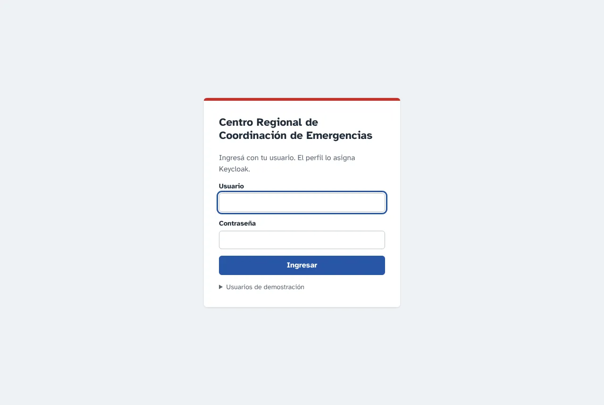
interfaz · paso 2 de 13 · reportante
El hospital registra un aviso y agrega una nota
reportante
Qué hace
Registra un incendio de gravedad alta y, mientras sigue pendiente, agrega una nota.
Qué pasa por dentro
POST /avisos y POST /avisos/{id}/notas. Solo ve sus propios avisos: otro reportante no lo encuentra.
PV01
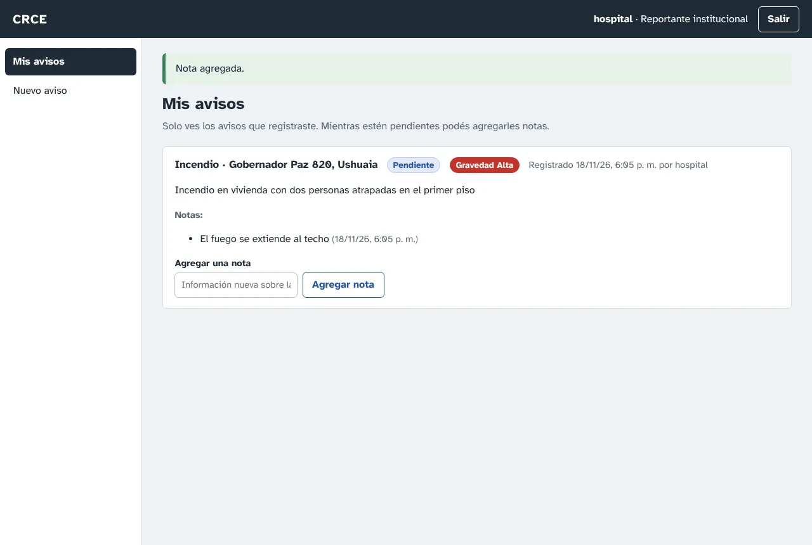
interfaz · paso 3 de 13 · operador
El operador evalúa el aviso
operador
Qué hace
Ve los avisos pendientes, confirma o corrige tipo y gravedad, y acepta. También podría descartarlo con una justificación.
Qué pasa por dentro
POST /avisos/{id}/aceptacion: el aviso queda aceptado y nace la emergencia.
PV02
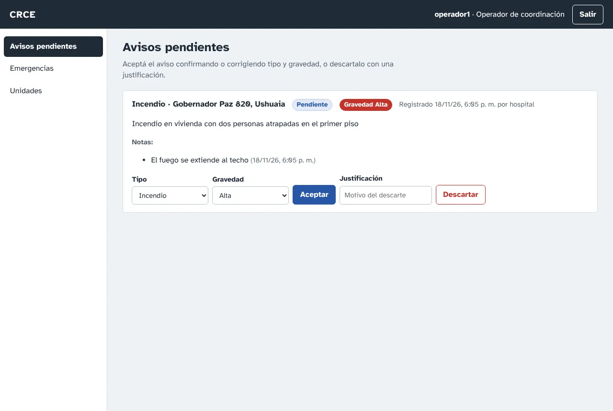
interfaz · paso 4 de 13 · operador
Emergencias abiertas, por prioridad
operador
Qué hace
La lista ordena por gravedad (alta, media, baja) y, a igual gravedad, por el momento de aceptación.
Qué pasa por dentro
GET /emergencias: el orden lo calcula el servicio, la interfaz solo lo muestra numerado.
PV03
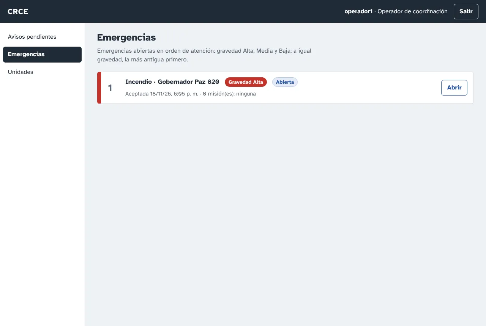
interfaz · paso 5 de 13 · operador
Crear una misión
operador
Qué hace
Abre la emergencia y crea una misión de rescate. El campo de personas a evacuar aparece solo para evacuaciones.
Qué pasa por dentro
POST /emergencias/{id}/misiones: el dominio rechaza tipos que la situación no admite.
PV04PV05
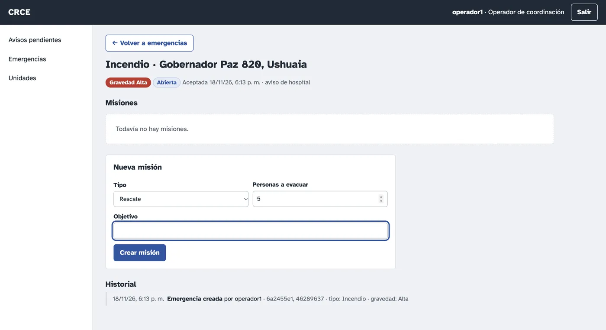
interfaz · paso 6 de 13 · operador
Asignación rechazada, sin cambios
operador
Qué hace
Intenta asignar la ambulancia a un rescate. El sistema lo rechaza con un mensaje comprensible.
Qué pasa por dentro
El dominio lanza VehiculoIncompatible → 409. La misión sigue pendiente y la unidad, disponible: nada quedó a medias.
PV08PV18
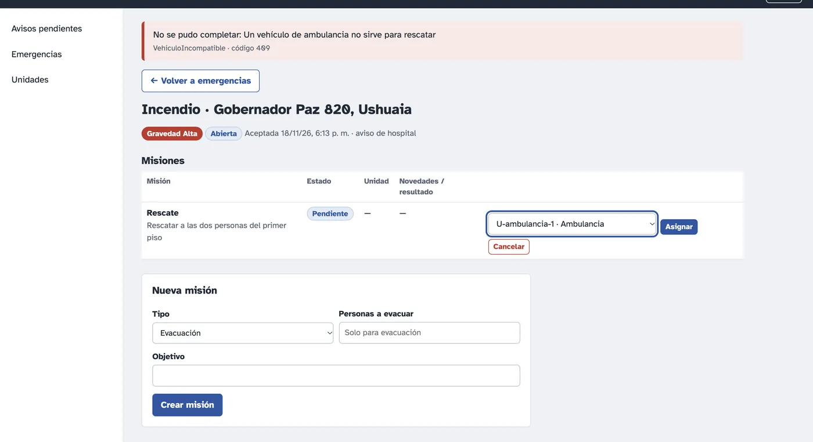
interfaz · paso 7 de 13 · operador
Unidad asignada
operador
Qué hace
Elige U-rescate-2, que cumple vehículo, integrantes y equipamiento. La misión pasa a asignada.
Qué pasa por dentro
La unidad queda comprometida con esta misión: no se puede asignar a otra.
PV10
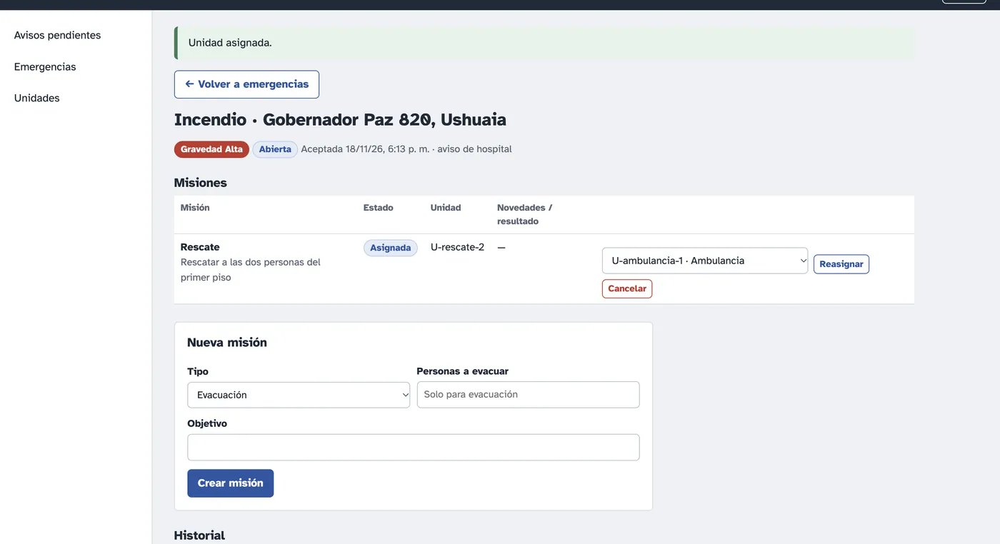
interfaz · paso 8 de 13 · responsable de recursos
La unidad comprometida no se modifica
responsable de recursos
Qué hace
Ve U-rescate-2 marcada como comprometida e intenta retirar a un integrante.
Qué pasa por dentro
UnidadComprometida → 409. Las unidades libres sí admiten cambios de personal y equipamiento.
PV14
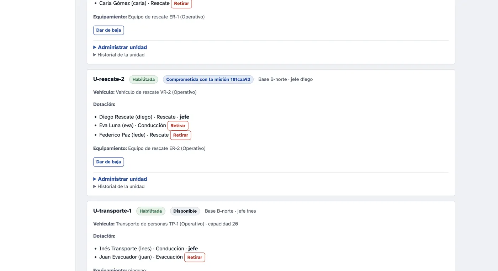
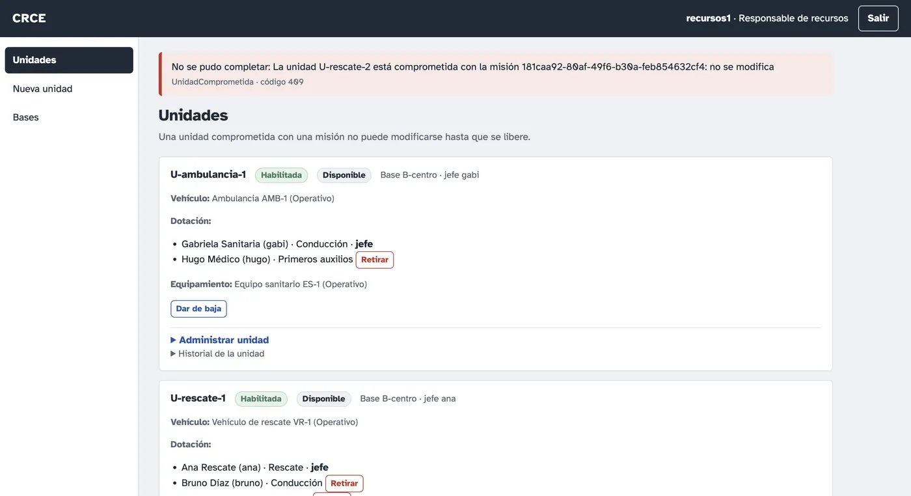
interfaz · paso 9 de 13 · jefe de unidad
Diego inicia la misión de su unidad
jefe de unidad
Qué hace
Solo ve las misiones de su unidad. Puede iniciarla o rechazarla con una justificación; la inicia.
Qué pasa por dentro
POST …/inicio. Otro jefe que lo intente recibe 403: el dominio verifica que sea el jefe de esa unidad.
PV11PV12
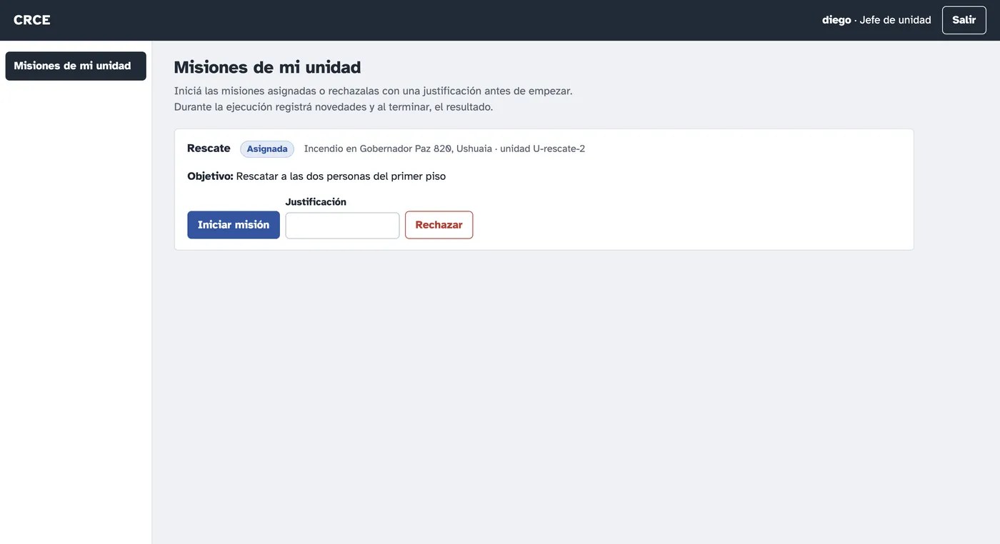
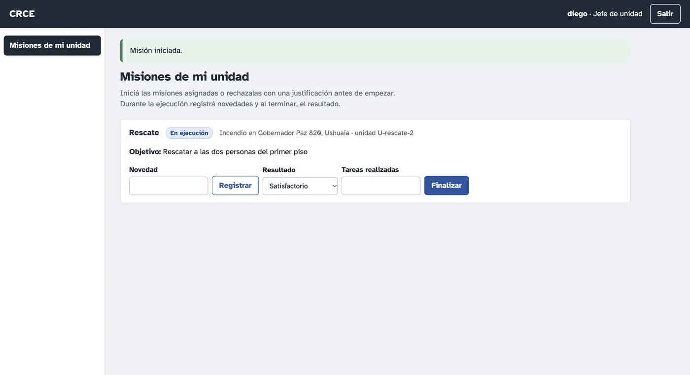
interfaz · paso 10 de 13 · jefe de unidad
Novedad y finalización
jefe de unidad
Qué hace
Registra una novedad y finaliza con resultado satisfactorio y las tareas realizadas.
Qué pasa por dentro
La misión queda finalizada y la unidad, liberada para otra misión.
PV11
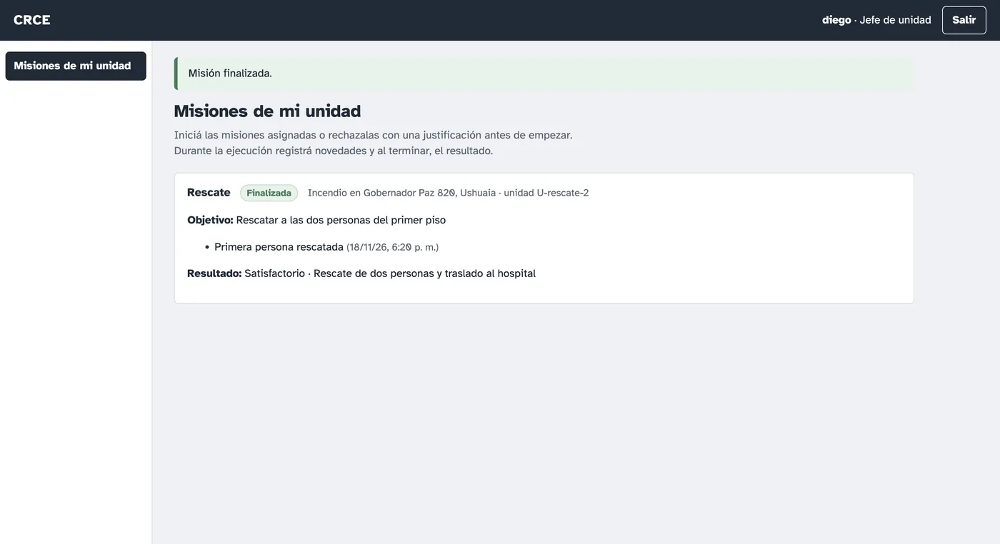
interfaz · paso 11 de 13 · supervisor
Cierre de la emergencia
supervisor
Qué hace
Abre la emergencia: todas las misiones concluyeron y una fue satisfactoria, así que puede cerrarla.
Qué pasa por dentro
POST …/cierre. Con misiones en curso o sin ninguna satisfactoria, el cierre se rechaza (409).
PV16
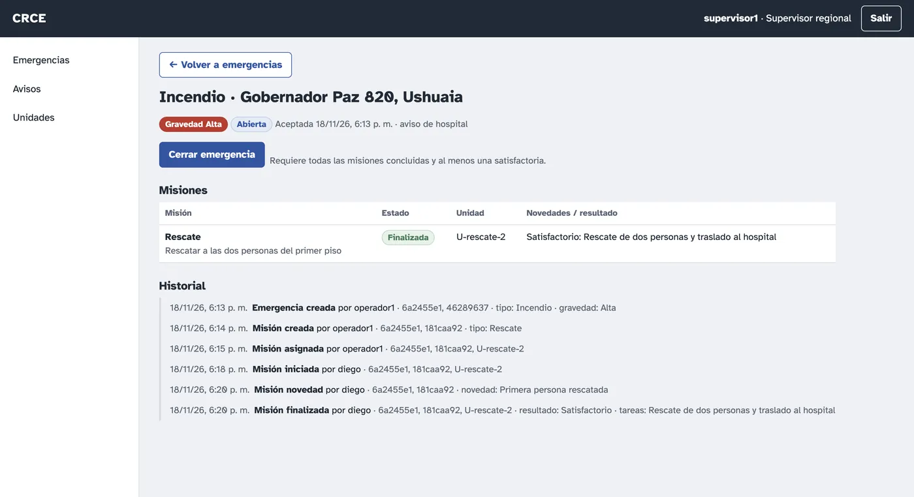
interfaz · paso 12 de 13 · supervisor
El historial completo
supervisor
Qué hace
La emergencia queda cerrada y el historial muestra cada operación con fecha, autor y datos.
Qué pasa por dentro
Los registros son inmutables: cambios posteriores en una unidad no alteran lo ya registrado.
PV17
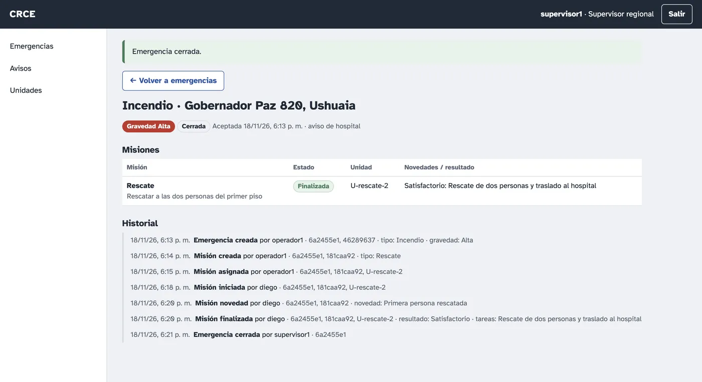
interfaz · paso 13 de 13 · reportante
El hospital ve cómo terminó
reportante
Qué hace
El reportante ve que su aviso fue aceptado y el estado de la emergencia que originó: cerrada.
Qué pasa por dentro
Ve tipo, gravedad, ubicación y estado; no ve misiones, unidades ni historial operativo.
PV02
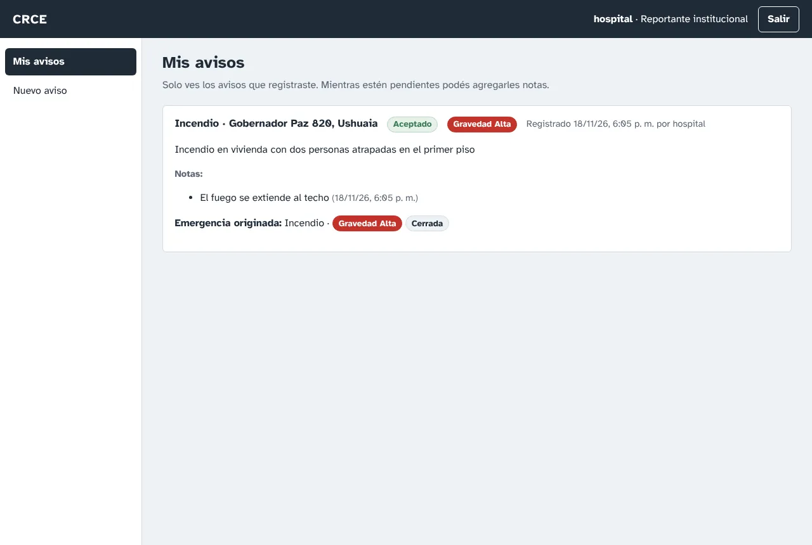
sistema completo · interfaz
Cómo evoluciona la información
El mismo recorrido, leído por el estado de cada objeto. Cada participante actúa solo cuando el estado anterior se lo permite.
Quién
Operación
Aviso
Emergencia
Misión
Unidad
1
reportante
registra
pendiente
—
—
disponible
2
operador
acepta
aceptado
abierta
—
disponible
3
operador
crea misión
aceptado
abierta
pendiente
disponible
4
operador
asigna
aceptado
abierta
asignada
comprometida
5
jefe
inicia
aceptado
abierta
en ejecución
comprometida
6
jefe
finaliza
aceptado
abierta
finalizada
disponible
7
supervisor
cierra
aceptado
cerrada
finalizada
disponible
Los rechazos del camino (ambulancia para un rescate, modificar una unidad comprometida) no cambian ninguna columna: esa es la consistencia que pide PV18.